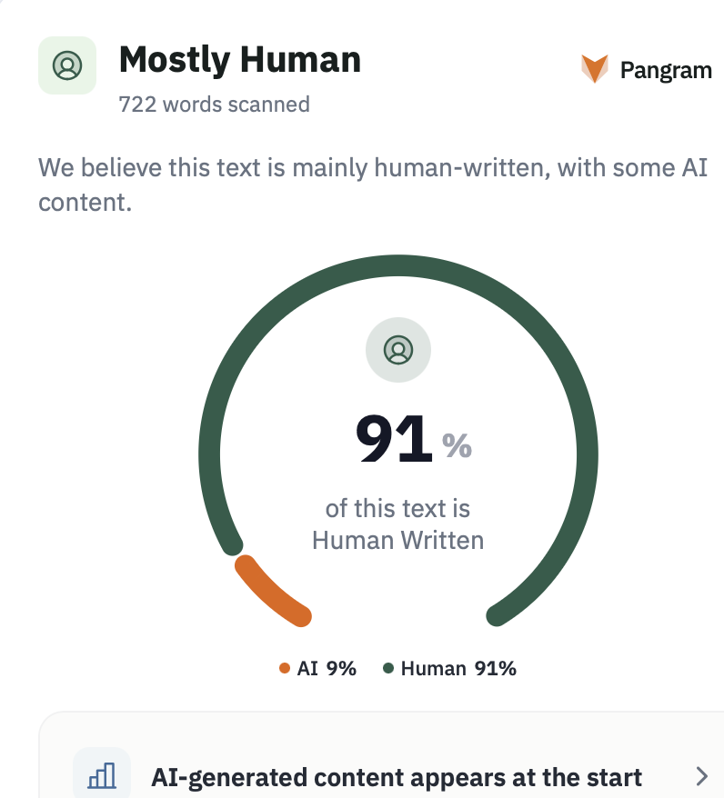
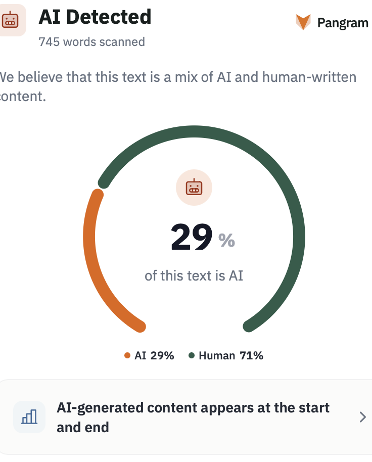

Download the article (PDF, 0.3 MB)
I find it ironic that people who seem to trust AI the least rely on AI-based detectors’ reports to do serious, unwarranted harm to individuals:
Moira Olmsted was a student at Central Methodist University in Missouri when a detector flagged one of her weekly reading summaries as likely written by AI. She got a zero. The grade was later restored, with a warning that the next flag would be handled as plagiarism. She told her instructor that she is autistic and writes the way she does because of it [4].
Mia Ballard self-published a horror novel, Shy Girl, in February 2025. Hachette bought it, published it in the UK that November, and scheduled a US edition for spring 2026. In January, the chief executive of Pangram, a detector company, ran the full text and posted on X that it scored 78% AI-generated. On March 19, the New York Times reported the score, and Hachette canceled the US edition and withdrew the UK edition the same day. Ballard says she did not use AI and that an editor she hired for the self-published version did [1].
Sally McGraw has written nonfiction for hire for more than 20 years. In 2026 she sent a prospective client a paid writing sample for a book proposal. The client wrote back that several detectors had flagged it as machine-generated. The client said the flags were not the deciding reason and hired someone else. McGraw says she wrote every word, and she has since changed how she writes to avoid the words and punctuation she thinks the detectors look for [7].
Orion Newby, a freshman at Adelphi University, wrote a history essay with help from a tutor in the university’s disability support program. Turnitin’s AI detector scored the essay 100% AI-written. Newby submitted results from two other detectors that called it human-written, and the university did not address them. He got a zero and an integrity violation on his record, and in January 2026 a court annulled the finding and expunged his record [9].
This is misguided in two ways:
The prosecutor’s fallacy. A detector vendor reports P(flag | AI), the probability that an AI-written text is flagged, and Turnitin puts it at 85% [3]. The accuser hears P(AI | flag), the probability that a flagged text was written by AI. These are different quantities. Converting one to the other requires Bayes’ theorem and a number the detector cannot supply: the share of texts that were AI-written. When that share is small, P(AI | flag) falls well below 85%, and many of the writers called in wrote their own text. Taking the vendor’s figure as the answer to the accuser’s question is the fallacy, and the four examples above show its cost. Thompson and Schumann named it in 1987 in a study of juries, where an expert reports P(evidence | innocent) and the jury hears P(innocent | evidence) [13].
Writing assistance. AI can be used in legitimate ways as an automated writing assistant and editor to capture the author’s intent. Professional writers use assistants and editors regularly without complaint.
Three ways to write using AI
An author can use an AI in three ways. The first is having the AI write the piece and submitting it as the author’s own. The second is copy editing, where a tool corrects the grammar and spelling of text the author wrote or rewords it. The third is supervised drafting. The first is what every rule about AI is written to stop. The third is the subject of this paper.
In supervised drafting, the author chooses the topic and prompts the AI on how to address it. The AI may find sources and write the first draft. The author tests the AI’s assertions in dialogue, checks the draft against the sources, and cuts what the author does not believe. The reasoning is the author’s, and the words are the AI’s. A detector cannot tell it from text an AI wrote alone.
How this paper was written, and its detector score
I chose the topic and drafted the paper with Claude, an AI model developed by Anthropic. Over several revisions, Claude, at my direction, rewrote the draft in my style and rebuilt it around supervised drafting. I decided what to keep, requested changes, and checked the sources and the arithmetic. The reasoning is mine, and most of the words are the AI’s.
On 1 November 2026, I ran the finished text of this paper, without references, through Pangram. It labeled the entire text "Possibly AI." On 20 November, I ran the first 722 words of that same draft again, and Pangram labeled it "Mostly Human," 9% AI and 91% human. The same day, I ran the first 745 words of the revised text, the introduction and the four cases. It reported "AI Detected," 29% AI and 71% human, with AI at the start and the end.


None of these results is a probability. Pangram’s model gives each passage a score and reports a label on a scale from Human to AI. The 29% is the share of the text whose passages it labeled AI. The company does not publish the scores behind the labels, and its technical report says the confidence it reports is not a probability that the label is correct [11]. The matrices in this paper need P(flag | AI) and P(flag | human), and there is no such rate for "possibly." None of these results can go into Bayes’ theorem, so no one can compute what they mean for the chance that an AI wrote the text.
The label is also unsteady. Pangram counts any label other than Human as a flag when it reports its false positive rate [11]. In its own tests, essays an AI had substantially rewritten were labeled fully human 41% of the time [11]. A detector that clears AI-rewritten essays as human that often is not measuring where the words came from. This paper shows the same thing. Every word in all three runs came from the AI under my direction. The same unedited text went from "Possibly AI" to 91% human in three weeks, so the detector changed, not the writing. By Pangram’s own rule, any label short of Human is a flag, so if I were a student all three results could put me in front of a hearing.
What the detector measures
For a native English writer, a flag means about a 94% chance the essay was AI-written, so about 6% of flagged students wrote the essay themselves. The arithmetic is worked out for a student because schools use detectors most, but it is the same for a journal or an employer. Here is how that number is got. A detector is tested on essays whose authorship is known, and the results are reported in a confusion matrix. A flag is a positive result. Each row is one kind of essay, and the percentages show what the detector does with it. The matrix below uses Turnitin’s figures, measured on the general run of student writing, so I treat it as the matrix for native English writers [3, 19]. It is illustrative, because Turnitin’s 15% miss rate refers to AI-written text rather than whole essays, and its 1% false positive rate applies only to documents scoring 20% AI or more [3, 19].
| Positive | Negative | |
|---|---|---|
| AI-written | True positive 85% |
False negative 15% |
| Human-written | False positive 1% |
True negative 99% |
The true positive rate is P(flag | AI) = 85%: when presented with an AI-written essay, the detector flags it 85% of the time. The false positive rate is P(flag | human) = 1%: when presented with a human-written essay, it flags it 1% of the time. These are the only metrics a vendor can measure, because they require knowing who wrote each essay.
The accuser hears them as P(AI | flag), and so treats 85% and 1% as near-certain proof of cheating.
P(AI | flag) is not in the matrix. Computing it requires one additional input, P(AI), the share of essays that were AI-written. In 2023, when Turnitin launched its detector, about 3% of English-language submissions scored at least 80% AI-written. Between October 2025 and February 2026, it was about 15% [14, 15]. These are the detector’s own counts and include its false positives. I use 15% for P(AI). Turnitin has updated its model several times since 2023 but has not published new true and false positive rates, so the matrix retains 85% and 1% [16].
Bayes’ theorem gives P(AI | flag):
P(AI | flag) = P(flag | AI) P(AI) / [ P(flag | AI) P(AI) + P(flag | human) P(human) ]
= 0.85 × 0.15 / [ 0.85 × 0.15 + 0.01 × 0.85 ] = 0.1275 / 0.1360 = 0.94
The 94% depends on P(AI). With the 2023 share of 3%, the same flag meant about 72%.
Non-native English writers
For a non-native English writer, a flag means about a 20% chance the essay was AI-written, so 80% of such students called to a hearing wrote the essay themselves. The 1% false positive rate is an average over the vendor’s test set, and it can be very different for some writers. Stanford researchers ran 91 TOEFL essays by Chinese students through seven detectors, which on average flagged 61% as AI-written [8]. The same detectors called essays by American eighth graders human almost every time [8]. The study did not test Turnitin, so the matrix below is illustrative. It keeps Turnitin’s true positive rate and replaces the bottom row with the Stanford false positive rate.
| Positive | Negative | |
|---|---|---|
| AI-written | True positive 85% |
False negative 15% |
| Human-written | False positive 61% |
True negative 39% |
P(AI | flag) = 0.85 × 0.15 / [ 0.85 × 0.15 + 0.61 × 0.85 ] = 0.1275 / 0.6460 = 0.20
That is the 20%. With the 2023 share of 3%, it was about 4%. The Stanford test used 2023 detectors, and I have found no newer false positive rate for these writers.
Liang and colleagues traced the problem to the scoring. The detectors score how predictable the wording is, and essays written with a limited vocabulary are more predictable [8]. When they had ChatGPT enrich the vocabulary of the same essays, the false positive rate fell to about 12% [8]. Text that language models have seen many times is also predictable, and GPTZero said the United States Constitution was likely written by AI [5].
Why a detector cannot enforce an AI rule
The matrices have two rows, AI-written and human-written, and supervised drafting falls in the top row. The words come from the AI, so a detector should score it as AI. Having the AI write the piece lands in the same row. Even a detector that worked as designed could not help here. A rule about AI, a course’s or a journal’s, asks what the author did, and the detector cannot see that.
Copy editing can land there too. Turnitin says Grammarly’s grammar and spelling corrections were mostly not flagged in its tests, but its paraphrasing likely will be [17]. Saha and Feizi had a Llama 2 model make very minor edits to human-written text. GPTZero then flagged about 65%, Pangram about 43%, and ZeroGPT about 32% [12]. The study did not test Turnitin. The case of Marley Stevens, a University of North Georgia student put on academic probation after using Grammarly, points the same way, but it is one student’s account, not a test [6, 19]. An author who lets a tool reword her sentences can get the same flag as one who had a chatbot write the piece.
This changes what the base rate means. The 15% I used for P(AI) counts essays Turnitin scored as at least 80% AI and includes supervised drafting and essays students wrote and then had a tool rephrase [15, 17]. A correct flag shows only that AI produced much of the wording.
The student never sees how the detector made its decision because Turnitin does not disclose its decision-making process [18]. The flag arrives as a finding, and the student is asked to disprove it. The detector is an AI, a language model trained to guess where text came from. The accusers do not trust AI enough to let a student check spelling with it, yet trust it enough to convict on its word alone [6, 19]. Turnitin itself recommends human judgment before finding misconduct, but at Australian Catholic University, some cases rested on the detector report alone [2]. Vanderbilt University did the math in 2023. It had submitted 75,000 papers in 2022; at a 1% false-positive rate, about 750 would have been wrongly labeled, and it turned the detector off [18].
An institution that enforces its AI rule with a detector enforces it on the wording, so it bans supervised drafting and some copy editing along with the first use. An author who knows a flag can mean a hearing or a rejection avoids even permitted help and gives up the time it would save. The writers with the most to lose are the weaker ones, who gained most in Noy and Zhang’s trial, and the non-native English writers, who are flagged most often [8, 10]. A writing course may forbid AI drafting because writing is what it teaches. The unfairness lies in enforcing any rule about AI with an instrument that cannot tell an author who directed and checked the work from one who did neither.
References
- Alter A. A.I. is writing fiction. Publishers are unprepared. New York Times, 19 March 2026. https://www.nytimes.com/2026/03/19/books/shy-girl-book-ai.html
- Bergin J. University wrongly accuses students of using artificial intelligence to cheat. ABC News (Australia), 9 October 2025. https://www.abc.net.au/news/2025-10-09/artificial-intelligence-cheating-australian-catholic-university/105863524
- Chechitelli A. AI writing detection update from Turnitin’s Chief Product Officer. Turnitin blog, 23 May 2023. https://www.turnitin.com/blog/ai-writing-detection-update-from-turnitins-chief-product-officer
- Davalos J, Yin L. AI detectors falsely accuse students of cheating, with big consequences. Bloomberg Businessweek, 18 October 2024. https://www.bloomberg.com/news/features/2024-10-18/do-ai-detectors-work-students-face-false-cheating-accusations
- Edwards B. Why AI detectors think the US Constitution was written by AI. Ars Technica, 14 July 2023. https://arstechnica.com/information-technology/2023/07/why-ai-detectors-think-the-us-constitution-was-written-by-ai/
- Fox 5 Atlanta. Georgia college student used Grammarly, now she is on academic probation. February 2024. https://www.fox5atlanta.com/news/grammarly-georgia-college-student-academic-probation-plagiarism-allegations
- Johnston W. Your writing was flagged as AI. What does that actually mean? NPR, 31 October 2026. https://www.wlrn.org/npr-breaking-news/2026-10-31/your-writing-was-flagged-as-ai-what-does-that-actually-mean
- Liang W, Yuksekgonul M, Mao Y, Wu E, Zou J. GPT detectors are biased against non-native English writers. Patterns 2023;4(7):100779. https://doi.org/10.1016/j.patter.2023.100779
- Matter of Newby v Adelphi Univ., 2026 NY Slip Op 26021 (Sup Ct, Nassau County, 28 January 2026). https://law.justia.com/cases/new-york/other-courts/2026/2026-ny-slip-op-26021.html
- Noy S, Zhang W. Experimental evidence on the productivity effects of generative artificial intelligence. Science 2023;381(6654):187-192. https://doi.org/10.1126/science.adh2586
- Pangram Labs. Pangram 4 technical report. arXiv 2607.27183, 2026. https://arxiv.org/abs/2607.27183
- Saha S, Feizi S. Almost AI, almost human: the challenge of detecting AI-polished writing. arXiv 2502.15666, 2025. https://arxiv.org/abs/2502.15666
- Thompson WC, Schumann EL. Interpretation of statistical evidence in criminal trials: the prosecutor’s fallacy and the defense attorney’s fallacy. Law Hum Behav 1987;11(3):167-187. https://doi.org/10.1007/BF01044641
- Turnitin. Turnitin marks one year anniversary of its AI writing detector with millions of papers reviewed globally. Press release, 9 April 2024. https://www.turnitin.com/press/turnitin-first-anniversary-ai-writing-detector
- Turnitin. Turnitin data shows transparency about AI use benefits students and educators. Press release, 24 February 2026. https://www.turnitin.com/press/turnitin-data-shows-transparency-about-ai-use-benefits-students-and-educators
- Turnitin. AI writing detection model: release notes. Turnitin Guides, accessed 31 October 2026. https://guides.turnitin.com/hc/en-us/articles/28294949544717-AI-writing-detection-model
- Turnitin. AI writing detection frequently asked questions. Turnitin Guides, accessed 31 October 2026. https://guides.turnitin.com/hc/en-us/articles/28477544839821
- Vanderbilt University. Guidance on AI detection and why we’re disabling Turnitin’s AI detector. 16 August 2023. https://www.vanderbilt.edu/brightspace/2023/08/16/guidance-on-ai-detection-and-why-were-disabling-turnitins-ai-detector/
- Young JR. Can using a grammar checker set off AI-detection software? EdSurge, 4 April 2024. https://www.edsurge.com/news/2024-04-04-can-using-a-grammar-checker-set-off-ai-detection-software
Listed with my other AI material on the AI page.